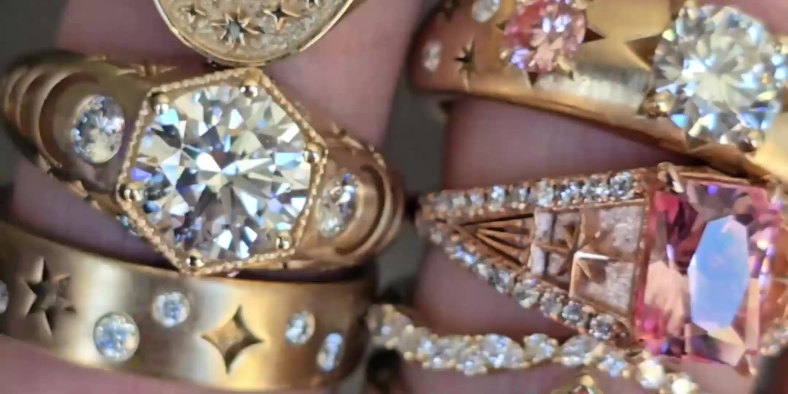
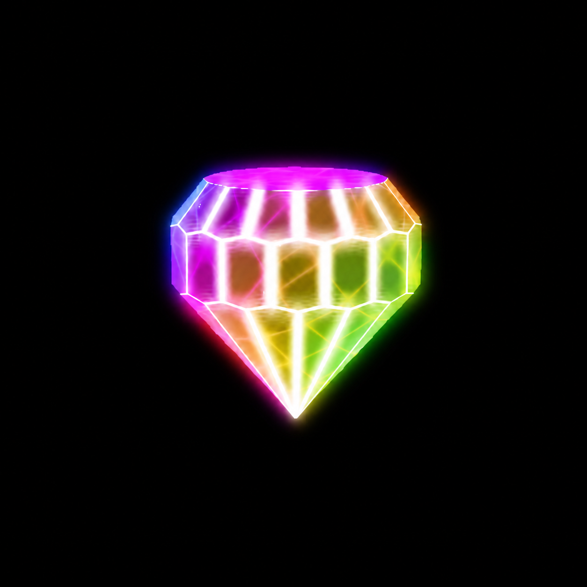

Some stones turn colors.
Custom Gems Turn Heads
The hand and the cut


Cut by hand, one at a time.
Selected work

Bring Your Vision To Life
Looking for Inspiration or Want something now?
See What's Ready Now